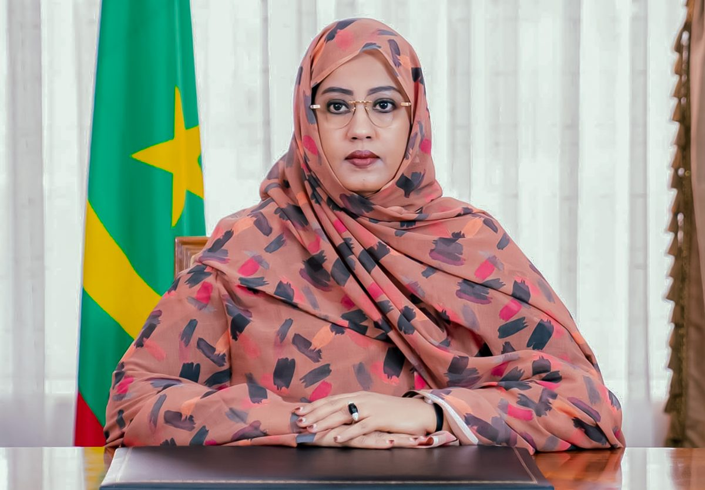
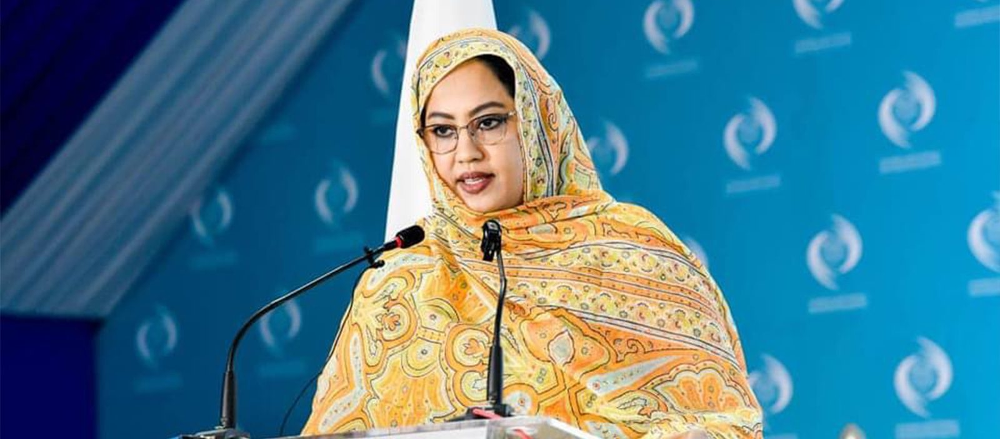

طبيبة أسنان ودبلوماسية سابقة، كرّست نشاطها العام لحماية الطفولة وتمكين ذوي الإعاقة وتمكين المرأة وترقية التعليم.

تعزيز الوعي المجتمعي وتطوير مسارات التكفل الصحي والتربوي والاجتماعي.
الرئاسة الشرفية للاتحادية الوطنية، وأول استراتيجية وطنية 2022–2030.
أسبوع وطني لحقوق المرأة يُنظَّم سنويًا في جميع الولايات.
تشجيع التفوق الدراسي والعمل التطوعي، والاحتفاء بالمتفوقين.

مشاركة في مؤتمرات دولية حول التعليم والتنمية وتمكين المرأة، واستضافة ملكة إسبانيا وعدد من السيدات الأُوَل في نواكشوط.
الاستثمار في الإنسان أساس التنمية المستدامة، والتعليم وتمكين المرأة وإدماج ذوي الإعاقة وحماية الطفولة ركائز لمجتمع أكثر عدالة.